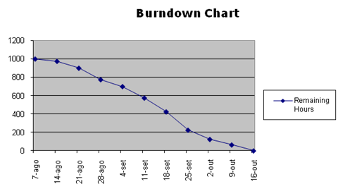

|
|||||||||
The purpose of this task is to put into practice the strategy, processes and procedures documented in the Work Management Plan component of the Project Management Plan (PMP). This will engage resources to execute the Work Management Plan (tasks and processes). It is important to regularly review and update the Project Workplan with the actual progress. This task is ongoing throughout the Project Execution and Control phase by following an iterative and incremental planning approach.
As discussed in task, Develop Baseline Project Workplan (WM.010), plans are created in OUM using a top-down/bottom-up approach in which the plans at each layer (Implementation and Iteration) are created and maintained in a simultaneous fashion. Because the plans are inter-related, it is likely that a change to a plan at one layer will cause the need for an adjustment to a plan at another layer. At any given time in a project, there are two Iteration Plans active – the one for the current iteration and the one for the upcoming iteration. In this task, the Iteration Plan for the current iteration is monitored and maintained, the Iteration Plan for the subsequent iteration is drafted and the Implementation Plan is adjusted as necessary based on the current and projected actual versus expected progress.
PEC.ACT.MPW Manage Project Workplan
Project Workplan
The Project Workplan consists of the following:
The Project Workplan is a living document that needs to be actively managed and maintained to reflect the current status and provide a realistic forecast throughout the duration of the project. The Project Workplan is executed using the Work Management Plan component of the PMP. The Project Workplan consists of the following:
The Baseline Project Workplan that was created in WM.010 is used as the starting point for the Project Workplan. It was created using a top-down/bottom-up approach in which the plans at each layer (Implementation and Iteration) are created and maintained in a simultaneous fashion. Because the Implementation Plan and Iteration plans are inter-related, it is likely that a change to a plan at one layer will cause the need for an adjustment to a plan at another layer.
Notice that the plan at the Implementation Plan level is longer in terms of time horizon but lower in granularity. This allows the project manager and other stakeholders to have a roadmap view of the project’s major milestones. The detailed planning is done at the Iteration Plan level that has a shorter time-horizon but more detail. This allows the project manager and team members to have a way of planning and managing their day-to-day work.
You should follow these steps:
No. |
Task Step | Component | Component Description |
|---|---|---|---|
1 |
Identify the objectives for the current Iteration Plan. | Objectives, Iteration Plan Summary, Iteration Objectives | An iteration’s objectives and scope are defined in OUM by the set of use cases, configuration requirements and other non-functional requirements that will be achieved during the iteration. These requirements are selected from the project’s current MoSCoW List and should be focused on achieving the objectives of the present phase of the project. |
2 |
Create the current Iteration Plan. | Iteration Plan for the Current Iteration | The current Iteration Plan includes a time horizon for the next two to six weeks. It often can start with a copy of the initial Iteration Plan (from the Baseline Project Workplan - WM.010) or the prior Iteration Plan (depending on where you are in the project). Bring forward any work not completed from the prior iteration and any approved change requests. |
3 |
Towards the end of the current iteration, create the draft plan for the upcoming iteration. | Iteration Plan for the Upcoming Iteration | The upcoming Iteration Plan should start with a copy of the current Iteration Plan and is updated for the next iteration. It evolves as the current iteration is executed. As results are known during the current iteration, it will become apparent which tasks need to be included in the next iteration. |
4 |
Adjust the Implementation Plan as needed. | Implementation Plan | The Implementation Plan must be kept in synch as each subsequent Iteration Plan is developed. The degree to which an iteration achieves its objectives will impact future iterations as well as milestones on the Implementation Plan. |
5 |
Analyze the Project Workplan for variances and trends and update accordingly. | Updated Project Workplan | The Project Workplan is updated for any variances and trends. Be sure to follow the update and version procedures defined in the Work Management Plan component of the PMP. |
6 |
Periodically, review the Implementation Plan for the project schedule and completion estimate. | Project Schedule and Completion Estimate | The Project Schedule and Completion Estimate is determined from the Project Workplan and Resource Plan. |
7 |
Produce Progress Reports. | Various Work Management Progress Reports | Various Work Management Progress Reports are produced based on the Reporting defined in the Work Management Plan component of the PMP. |
8 |
Ensure project team is submitting time and expense reports. | Time and Expense Reports | Time and Expense Reports are submitted by the project team based on the procedures defined in the Work Management Plan component of the PMP or Orientation Guide (STM.040). |
9 |
Ensure work breakdown structure (WBS) and time entries are in synch. | Weekly Time Entry | The Weekly Time Entry is synchronized with time entry according to the procedures defined in the Work Management Plan component of the PMP or Orientation Guide (STM.040). |
10 |
Enter actuals in WBS weekly for the current Iteration Plan. | Updated Iteration Plan | The Iteration Plan is updated weekly with actuals. |
11 |
Assign team members to tasks. | Task Assignments | Task Assignments are given to team members according to the information defined in the Work Management Plan component of the PMP or Orientation Guide (STM.040). |
12 |
Communicate project status to team. | Team Status Report | The Team Status Report is communicated to the team as defined in the Project Team Communication Plan component of the PMP. |
13 |
Update task status (at least weekly). | Task Status Report | The Task Status Report is updated as defined in the Project Team Communication Plan component of the PMP. |
14 |
Capture all unplanned activities. | Unplanned Activities Log | The Unplanned Activities Log is produced as defined in the Unplanned Activities TIme Capture Process defined in the Work Management Plan component of the PMP or Orientation Guide (STM.040). |
15 |
Forecast remaining work. | Remaining Work Forecast | The Remaining Work Forecast is a realistic forecast of work remaining. |
16 |
Back up and archive Project Workplan. | Project Workplan | The Project Workplan is backed up and archived as defined and scheduled in the Work Management Plan component of the PMP. |
The Project Workplan is a living document that needs to be actively managed and maintained to reflect the current status and a realistic forecast throughout the duration of the project. Use the information documented in the Work Management Plan component of the PMP to manage the Project Workplan.
Iteration planning is where the bulk of planning for a project occurs. Each iteration should be planned so that a set of specific objectives are accomplished and a group of project risks are addressed. A project manager will typically analyze and manage the current Iteration Plan on a daily basis.
The Iteration Plan information should be compiled in two documents. The first document, the Iteration Plan Summary reflects the scope and objectives of the iteration. The primary goal of the scope is to clarify the iteration's objectives, priorities and evaluation criteria. This information can be used to track the iteration's progress and drive the iteration assessment. The rest of the plan captures the detailed plan at the task level for the execution of the iteration.
For each iteration, the top risks should be identified based on the current state of the project (i.e., progress to-date, project phase, team experience, etc.). A rule of thumb is to narrow the top risks to a list of no more than 10. Based on the list of the top 10 risks, the Iteration Plan can be developed to actively address each risk.
The deliverables for a given iteration should be associated with one or more of the iteration’s objectives. The iteration’s deliverables should not be confused with the OUM task work products. The work products are just a means to an end to producing the deliverable and are not necessarily related to the project’s objectives.
The most important deliverable of any iteration is the increment that will be developed. This is defined in OUM by the set of use cases, configuration requirements and other non-functional requirements that will be achieved during the iteration. These requirements are selected from the project’s current MoSCoW List. Selecting the right set of requirements requires collaboration among all team members and should be focused on the current M’s and S’s shown on the MoSCoW list. Simply stated, the MoSCoW List registers the known business requirements. Each requirement is classified by the first letter of: Must, Should, Could or Won’t.
As the project moves along and risks are retired, the focus of the iterations can shift to filling out the needed functionality for the product under development. Also, change requests and identified defects can be addressed as the more architecturally significant use cases have been realized. To achieve the right balance, the required functionality, change requests and defects must be prioritized and estimated by analyzing the MoSCoW List. See task, RD.045 - Prioritize Requirements for more information on how MoSCoW is used in OUM.
The scope of the iteration will be determined according to the objectives for the current iteration, team capacity and the iteration’s deliverables. These factors are discussed in the sections below.
Based upon the results of the risk analysis and the progress of the project up to this point must be refined to provide a clear set of measurable and achievable objectives for the given iteration. The objectives for any iteration should be based on the current phase the project and should relate to meeting the milestone objectives for the particular phase.
The team’s capacity is a broad measure of the amount of effort the team will be able to take on in the iteration. The team capacity must be considered when planning the scope of work for the iteration. The capacity is determined by the team’s size, availability and velocity, which refers to the speed at which a team can implement and test use cases and change requests.
As the project progresses, it is often the case that requirements are handled with less effort which results in an increase in the team’s velocity. Velocity can be used to develop the initial estimates of the duration and effort required to complete the current iteration.
A team’s velocity over time can be tracked using a burn-down Chart.

The burn-down chart above tracks progress by showing a decrease in the remaining hours. A project team can select any measure they deem relevant to measure progress such as the number of scenarios completed, days remaining, etc.
The current team’s capacity drives the initial estimates for the effort and duration for the given iteration. These initial estimates are needed to select which objectives will be included in the Iteration Plan and will be further refined as the Iteration Planning progresses.
The deliverables should be associated with one or more of the iteration’s objectives. The iteration’s deliverables should not be confused with the OUM task work products. The work products are just a means to an end to producing the deliverable and are not necessarily related to the project’s objectives.
The most important deliverable of any iteration is the increment that will be developed. This is defined in OUM by the set of use cases and other non-functional requirements that will be achieved during the iteration. These requirements are selected from the project’s current MoSCoW list. Selecting the right set of requirements requires collaboration among all team members and should be focused on the current Musts and Shoulds shown on the MoSCoW list. Simply stated, the MoSCoW List registers the known business requirements. Each requirement is classified by the first letter of: Must, Should, Could or Won’t.
As the project moves along and risks are retired, the focus of the iterations can shift to filling out the needed functionality for the product under development. Also, change requests and identified defects can be addressed as the more architecturally significant use cases have been realized. To achieve the right balance the required functionality, change requests and defects must be prioritized and estimated by analyzing the MoSCoW List. See Task RD.045 - Prioritize Requirements for more information on how MoSCoW is used in OUM.
The second document in the Iteration Plan is the WBS Project Workplan. It lays out the detailed tasks required to achieve the scope that has been established for the current iteration. This is done by selecting the appropriate tasks from the OWM work breakdown structure (WBS) for the current phase of the project.
As with any OUM project, it is recommended that the project manager build the Project Workplan by starting with the appropriate pre-tailored view for the type of project under consideration (Solution-Driven Application Implementation, Requirements-Driven Application Implementation, etc.) and scaling the project for the given circumstances. The Project Workplan should focus on the tasks included in the OUM Implement Core Workflow, which identifies the core tasks within the Implement Focus Area.
Resources need to be associated with each OUM task included in the Project Workplan. The resources are assigned based on availability and matching the appropriate skill-set to the task. All OUM tasks contain a Roles and Responsibilities table that can be used when assigning resources to tasks. In addition, the Project Roles reference page provides additional information about the specifics of each role.
Once the resource assignments have been made estimates can be developed for each task associated with the iteration. The detailed estimates are determined by refining the initial capacity-based estimates through the use of traditional estimating techniques that can be augmented through a commitment-driven approach. The commitment-driven estimating approach involves asking those team members assigned to provide an estimate of how much effort will be required to complete the tasks for each requirement in the iteration.
The individual task estimates balanced with the team velocity form the basis for the estimates for the Project Workplan. These estimates should be verified against broader estimates completed as part of the initial planning effort for the iteration.
OUM strives to minimize dependencies within the detailed Project Workplans due to the limited duration of the plans. The key to reducing dependencies is to select relatively independent bits of functionality that can then be integrated to achieve the iteration’s objectives. However, dependencies cannot be completely eliminated and must be taken into account. This is where the project manager must work with the project team and stakeholders to do further analysis of the MoSCoW List. The dependencies for the use cases addressed in the current iteration must be reflected on the MoSCoW List must also be reflected in the detailed plan for the iteration.
Each objective must be associated with an evaluation criterion that defines how the achievement will be measured and the levels of those measurements that will be considered a success. These evaluation criteria must be clear and not subjective. The evaluation criteria must be objective and measurable so that progress toward the project’s goals can be demonstrated at the end of the iteration.
Iteration assessments are essential since iterative development is a collaborative endeavor between the project team, end users and project sponsors. The iteration assessments are important events since they uncover potential issues that could derail the iteration. They also allow the team the ability to take necessary corrective action to get the project righted. Iteration assessments include demonstrating evidence of results, open and honest review of the iteration, discussion on how to improve the next one and acceptance reviews to ensure objectives have been met and the evaluation criteria have been satisfied.
Because of the large number of variables in a project and their interdependencies, it is not possible to accurately forecast all the outcomes. For this reason, projects rarely run exactly as per the plan defined at the outset and require active management to stay on track. Without a realistic, up-to-date plan the project is likely to be out of control and the project manager will lose credibility.
On a regular basis, analyze the Project Workplan for variances and trends for tasks and resources (for example, incomplete tasks to be sure that none have overdue start or end dates or zero work remaining). Revise task estimates and task assignments as needed to meet the project’s schedule and budget. Changes could include but are not limited to task re estimating, task rescheduling, resource reassignment, and changes due to change orders. When making changes to the work plan, keep the baseline intact unless the change is due to a change order. If tasks are added due to change orders, these must be base lined. If there are multiple changes consider consider re-baselining for a package rather than individual changes.
Keep abreast of the project’s schedule and estimate to complete – this information is derived from the Project Workplan. It is common practice for project managers to use a separate Resource Plan to determine the resource actuals and estimates to complete. This Resource Plan and the Project Workplan must correlate. The project manager must be prepared to provide this information (as accurately as possible) whenever asked.
Following the the Work Management Plan component of the PMP, regularly report project progress based on the Project Workplan.
If actuals are being entered into the Project Workplan, collect this information weekly and enter the actuals into the Project Workplan. These actuals would also provide task status.
Review the Project Workplan for unassigned tasks and assign tasks to team members that would be the task’s primary resource. Tasks must be assigned at least one week in advance of their start date unless the task is a recent add on due to a change order. Assignment of tasks must include advising the assignee of task priority, dependencies, duration, schedule (start and end dates), estimated work, and review schedule. It is good practice to provide team members with a task information sheet, which lists their individual tasks at a glance.
Keep the project team abreast of the overall project status. On a regular basis, review the project status with the team. Provide an up-to-date hard copy of the Project Workplan to project team members at least bi-weekly. Give the project team an at-a-glance schedule at pre-defined times – this needs to be no less than 2 weeks at a glance. This is particularly important for the customer so that they can plan their work schedule in advance. As the entire team needs to be working toward the same, most up-to-date version of the plan, ensure that the most current copy of the Project Workplan is understood and accessible to those who need it.
Capture task status from the team and update the Project Workplan with the status. Usually, it is performed weekly and the information is given by the team member to the project manager at the end of the work week. It is a recommended practice that the team member provide task status via a weekly task status report. The team member can also use the status report to communicate risks, issues, and upcoming plans. Review all requests by team members indicating that a task needs to be re estimated and/or rescheduled. Either approve requests or adjust them. Advise team members as soon as possible of any adjustments made.
The project manager must review and approve all re-estimating and rescheduling; the project manager’s review could result in the project manager overriding the new estimate/revised schedule given by a team member. Feedback regarding this approval and the resulting schedule change, if any, needs to be given as soon as possible to the team member – preferably by the first day of the following work week after the status was given. The rule of thumb is that no task should have a zero estimate to complete if the task is not completed and no task would have overdue start and end dates.
Determining task status should generally be based on the amount of work (hours) remaining. For example, if a task has a 40 hour baseline, 20 hours have been spent on the task to date and the team member feels that the task can still be completed with the remaining time allocated, the task would be considered 50% complete. However, if the team member estimates that either more or fewer remaining hours are needed, the task must then be re-estimated. If the team member estimates that the duration (start and end dates) does not line up to the original duration, the task must be rescheduled (and re-estimated if appropriate).
The team member must work to plan – any activities outside of plan need to be reported weekly by the team member and tracked by the project manager. Team members need to obtain the project manager’s approval before taking part in unplanned activities. If this is not possible, the team member needs to advise the project manager of the activity as soon as feasible. The amount of work on these activities needs to be tracked and reported separately from planned work. A recommended practice is to include an area in weekly team status reports for the team to advise of the unplanned activity performed and the amount of work (hours) performed. The project manager would log the unplanned activity in a specified area in the work plan including the resource that performed it and the amount of time spent.
Capture all unplanned activities and log them – including the activity, resource, and amount of time spent. A good practice is to include a section in the Project Workplan to log these. They would be closed immediately after being logged. Include this information when reporting status.
Estimate remaining work on the project by reviewing the Actuals; and by estimating the remaining effort. It is important that the remaining effort is not calculated by Budget minus Actual. Remaining effort in the project must be calculated.
The Baseline Project Workplan (WM.010) and Work Management Plan component of the PMP are developed during the Project Start Up phase and set forth the plan, and project procedures for managing work. They should be communicated to the project team in the Work Management Presentation made during the Team Orientation Meeting. Refer to the Conduct Team Orientation task (STM.050) for more information on the Team Orientation Meeting. During the Team Orientation Meeting and whenever a new resource joins the project, it is important for the project manager to establish the culture and ground rules for how the project works. The project manager must ensure that the team members doing the work, clearly understand
The above need to be reinforced throughout the duration of the project.
Along with other key project documents the Project Workplan must be backed-up to secure storage (not on the project manager’s notebook/PC ) on a weekly basis and previous versions archived
Once a need for a specific resource has been identified, the delays to their being available to the project can be significant, particularly for international resources. A good Project Workplan will greatly assist identifying resource requirements in advance.
This task has supplemental guidance for iterative and incremental project planning. Use Planning a Project using OUM - An Iterative and Incremental Approach to access the supplemental information.
Refer to Tailoring OUM for Your Project for an overview of the tailoring process in OUM.
This task involves the following method roles:
Role |
Responsibility |
% |
|---|---|---|
Project Administrator |
Assist the project manager in the day-to-day management of the project by performing routine or repetitive activities, tasks or task steps. If your project does not have a dedicated project administrator, the project manager would perform these duties. | 15 |
Project Manager |
Manage the Project Workplan. | 85 |
You need the following for this task:
Prerequisite |
Usage |
|---|---|
Baseline Project Workplan (WM.010) |
Start with the Baseline Project Workplan. |
Project Management Plan, Work Management Plan (BT.070) |
The Work Management Plan component of the PMP establishes the project procedures for managing and monitoring all work performed on the project. |
Orientation Guide (STM.040) |
|
Oriented Team (STM.050) |
Oriented Team members (resources) are assigned to tasks in the Project Workplan. |
The following techniques are available to assist with this task:
Technique |
Comments |
|---|---|
Use this technique to refine the estimate of the number of iterations for each phase as the project progresses. |
|
Use this technique to measure actual project accomplishments against what was planned for agile projects. |
|
Use this technique for guidance on how Scrum affects Work Management. |
The following templates and tools are available to assist with this task:
Template File Name |
Comments |
|---|---|
Iteration Plan Summary |
MS WORD - Start with a copy of the initial Iteration Plan Summary (from the Baseline Project Workplan - WM.010) or the prior Iteration Plan Summary (depending on where you are in the project) to create the Iteration Plan Summary portion of the Iteration Plan that documents the scope, objectives and approach for the iteration. Bring forward any work not completed from the prior iteration and any approved change requests. |
| MS WORD | |
| MS EXCEL | |
| MS EXCEL | |
| MS WORD |
Tool |
Comments |
|---|---|
| Use this white paper for guidance on iterative and incremental project planning. |
Copyright © 2006, 2016, Oracle and/or its affiliates. All rights reserved.